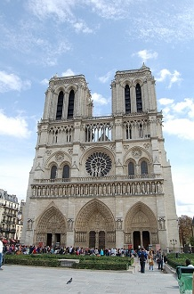
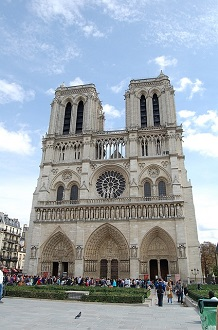

Torre Eif
A Torre Eiffel, um dos ícones mais reconhecíveis e amados do mundo, ergue-se majestosamente sobre o horizonte de Paris, tornando-se instantaneamente reconhecível como o símbolo da cidade das luzes. Projetada pelo engenheiro Gustave Eiffel para a Exposição Universal de 1889, a torre foi inicialmente recebida com controvérsia, mas logo se tornou um dos monumentos mais visitados e admirados do mundo. Com seus 324 metros de altura, a Torre Eiffel reinou como a estrutura mais alta do mundo por mais de quatro décadas, até a conclusão do Edifício Chrysler em Nova York. Sua estrutura de ferro distingue-se pela sua elegância e engenhosidade técnica, com uma forma que se estreita em direção ao topo, criando uma silhueta única e graciosa. A torre é dividida em três níveis principais, cada um oferecendo uma perspectiva única da cidade. Os visitantes podem subir de elevador ou escadas até o primeiro e segundo níveis, onde encontram lojas de souvenirs, restaurantes e vistas deslumbrantes da paisagem urbana parisiense. No terceiro nível, situado a uma altura impressionante de 276 metros, os visitantes são recebidos com vistas panorâmicas de tirar o fôlego que se estendem por toda a cidade e além. De lá, os pontos turísticos mais famosos de Paris, como o Louvre, o Arco do Triunfo e a Catedral de Notre-Dame, podem ser admirados em sua plenitude, enquanto o rio Sena serpenteia abaixo. Além de sua impressionante arquitetura e vistas espetaculares, a Torre Eiffel também desempenha um papel central na vida cultural e social de Paris. A cada noite, a torre se ilumina com milhares de luzes cintilantes, criando um espetáculo de luzes que é verdadeiramente mágico e romântico. Em suma, a Torre Eiffel é muito mais do que apenas uma estrutura de metal; é um símbolo da engenhosidade humana, uma obra-prima da arquitetura e uma parte inseparável da identidade de Paris. Ao longo dos anos, ela continua a inspirar e encantar milhões de visitantes de todo o mundo, lembrando-nos da beleza e da grandiosidade da cidade das luzes.

 
